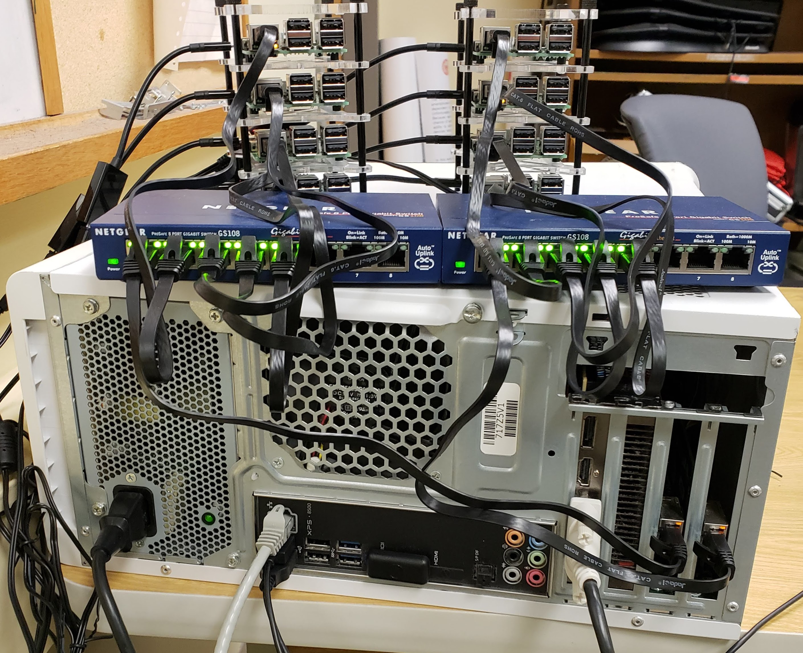

Welcome to the Panaderia
The Panaderia (Spanish for bakery) is a testbed comprised of 8 raspberry Pis, two switches and a router. The goal of this test bed is to evaluate different congestion control protocols by providing a controlled and realistic networking environment.
Specifically, we aim to evaluate new delay based congestion control algorithms such as BBR

-
What is delay based congestion control?
-
What did we do to set up this test bed?
-
Can we trust this test bed?